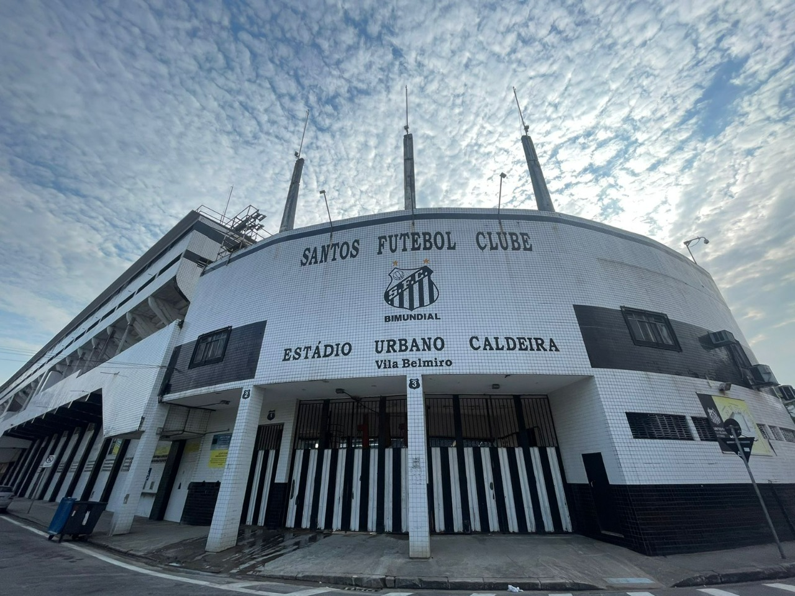

Neste site irei apresentar um pouco da história de um dos clubes mais famosos do mundo!
O Santos Futebol Clube, mais conhecido apenas como Santos, é um clube brasileiro fundado em 14 de abril de 1912, com sede na cidade homônima. Inicialmente suas cores seriam o branco, azul e dourado, mas um ano após a sua fundação, ficou decidido que as cores do clube passariam a ser branco e preto. O clube manda as suas partidas no Estádio Urbano Caldeira, mais conhecido como Vila Belmiro. O Santos tornou-se no futebol um dos clubes mais bem-sucedidos do Brasil e reconhecidos mundialmente. Ficou famoso na década de 1960 pelos vários títulos internacionais e nacionais conquistados e por ter revelado Pelé, considerado por muitos como o maior jogador da história do esporte, e segundo a FIFA, o melhor jogador do século XX. Além disso, o Rei também tem o marco de maior artilheiro da história do Santos. Ao longo de sua história, o Santos conquistou um grande número de títulos internacionais, com destaque para os mundiais de 1962 e 1963, as Copas Libertadores de 1962, 1963 e 2011 (recordista brasileiro ao lado de Flamengo, Grêmio, Palmeiras e São Paulo), a Recopa dos Campeões Intercontinentais de 1968, a Copa CONMEBOL de 1998 e a Recopa Sul-Americana de 2012. No cenário nacional é octacampeão brasileiro: 1961, 1962, 1963, 1964, 1965, 1968, 2002 e 2004. Ainda no âmbito nacional, o clube possui uma Copa do Brasil vencida em 2010, totalizando nove conquistas nacionais.
O Santos foi eleito pela FIFA em 2000 o quinto maior clube de futebol do Século XX, sendo o melhor clube das Américas na lista, e também recebeu no ano de seu centenário na câmara dos deputados em Brasília pela FIFA o título de "maior clube sul-americano do Século XX". Além de ser o clube brasileiro que mais enfrentou estrangeiros na história, o Santos é também o único clube brasileiro a ser campeão estadual, nacional, continental e mundial no mesmo ano, em 1962. Outro feito único do clube é ser o que mais marcou gols na história do futebol mundial, tendo sido o primeiro a alcançar a marca de 12 mil gols.
No ano seguinte, chegaria ao clube trazido pelas mãos de Waldemar de Brito, o menino Pelé de 15 anos, que posteriormente se tornaria o maior ídolo da história do clube. O primeiro título oficial de Pelé no Santos, aconteceu em 1958, quando o clube conquistou o seu quarto Campeonato Paulista, ali começava a história do camisa 10 pelo clube praiano. Ao lado de Pepe, Coutinho e Dorval, Pelé formou um ataque poderoso no Santos, com destaque para as duas conquistas da Copa Intercontinental e da Copa Libertadores da América, vencidas nos anos de 1962 e 1963 e também das cinco Taças Brasil conquistadas consecutivamente de 1961 a 1965, a década de 1960 é considerada a mais vitoriosa do Santos, ao todo foram 23 títulos oficiais conquistados nessa época. Ainda nessa década, no ano de 1969, o Santos ficou famoso por ter sido o time que parou a guerra, fato que ocorreu graças a uma excursão do clube no continente africano, em que o time paralisou os conflitos entre República do Congo e República Democrática do Congo e também a Guerra de Biafra, na Nigéria, para que as pessoas pudessem ver o Santos jogar.
Em 2009, começou aparecer a geração de Neymar e Ganso, que naquela temporada ficou com o vice-campeonato paulista. Já em 2010, comandada por Dorival Júnior, com o retorno de Robinho, presença marcante de Arouca, Wesley, e um ataque arrasador comandado por Ganso, Neymar, Robinho e André, o time conquistou o Campeonato Paulista e a primeira Copa do Brasil do clube, com um futebol arrasador e seguidas goleadas, nessa que ficaria conhecido como a terceira geração de Meninos da Vila. Depois de 48 anos, o Santos voltou a ser campeão da Libertadores, desta vez em 2011 após superar o Penãrol do Uruguai na final, conseguindo assim, o tricampeonato do clube na competição continental.
Mas como nem tudo são flores, após uma campanha irregular e terrivel no Campeonato Brasileiro de 2023, o Santos terminou na 17ª colocação e infelizmente foi rebaixado para a Série B pela primeira vez. A partida que culminou na queda aconteceu no dia 6 de dezembro, na Vila Belmiro, e o Peixe perdeu por 2 a 1 para o Fortaleza, manchando a sua gloriosa história.